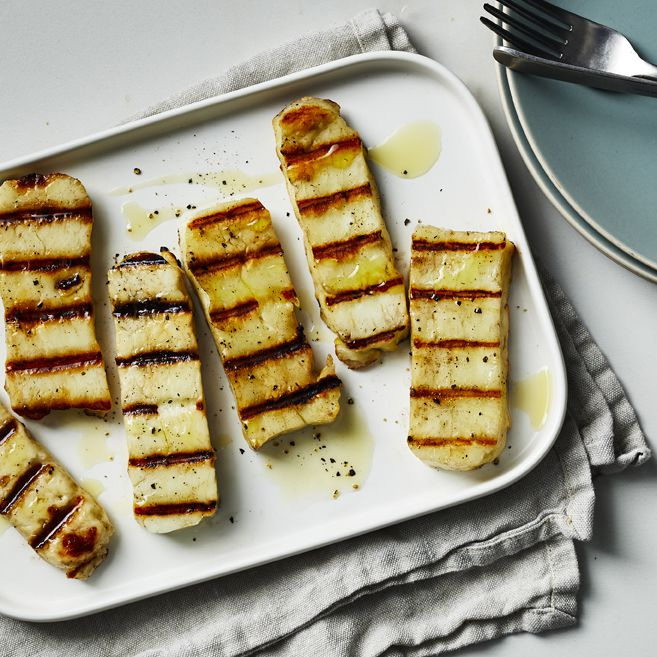

Halloumi is a cheese originating from Cyprus. It is traditionally made from a mixture of goat milk and sheep's milk; however, due to industrial tactics to increase profit, modern halloumi increasingly contains cow's milk.
The cheese's texture is often described as "squeaky" It has a high melting point and so can easily be fried or grilled, a property that makes it a popular meat alternative among vegetarians.